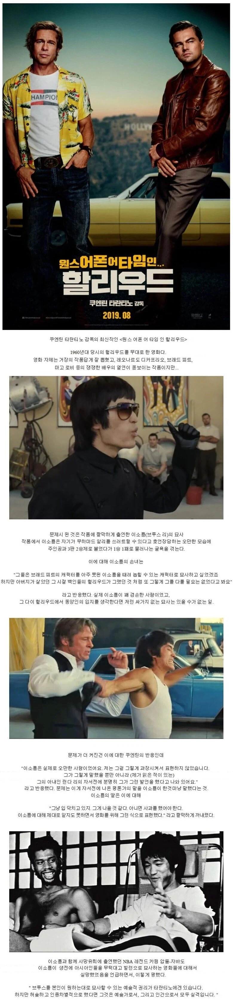
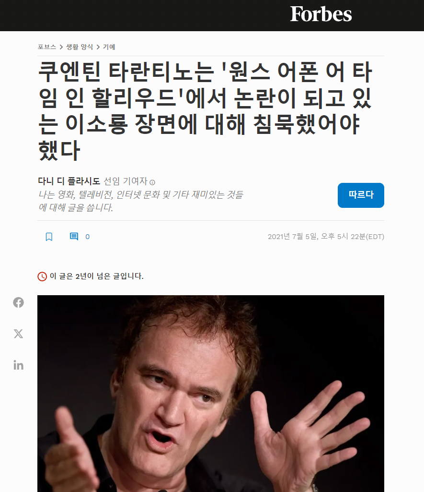
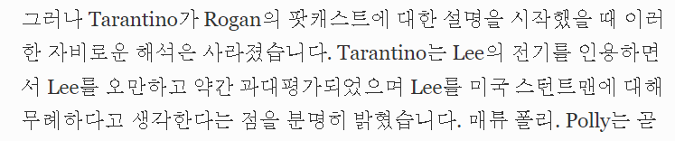
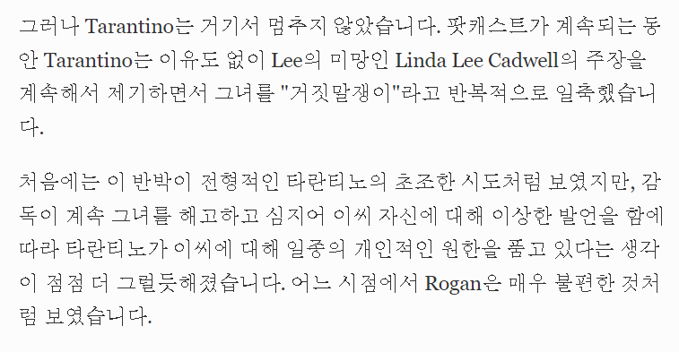
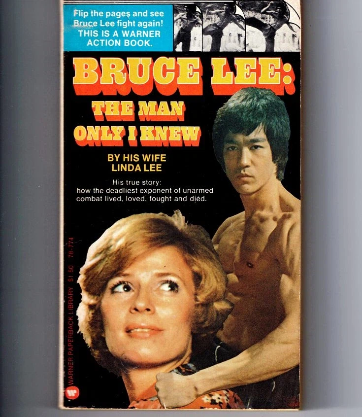
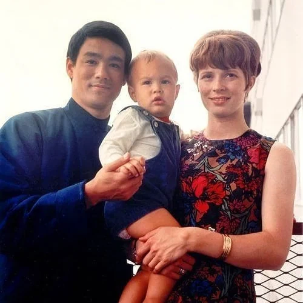
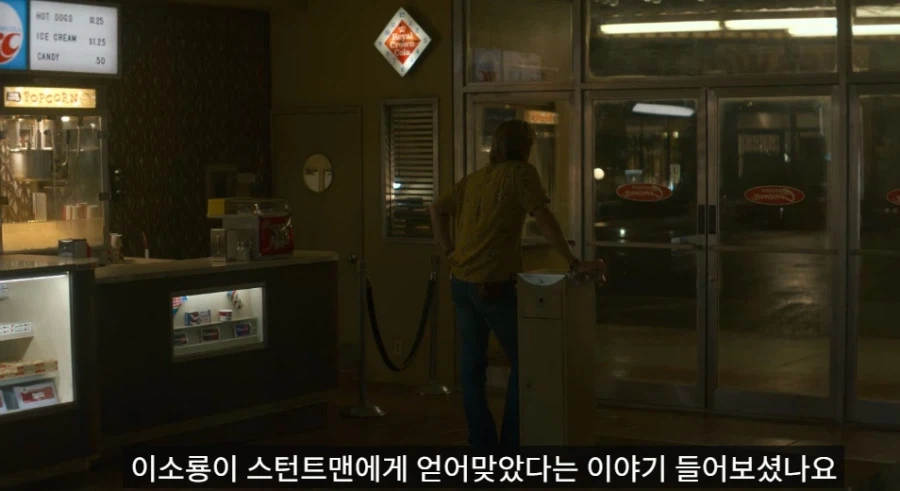
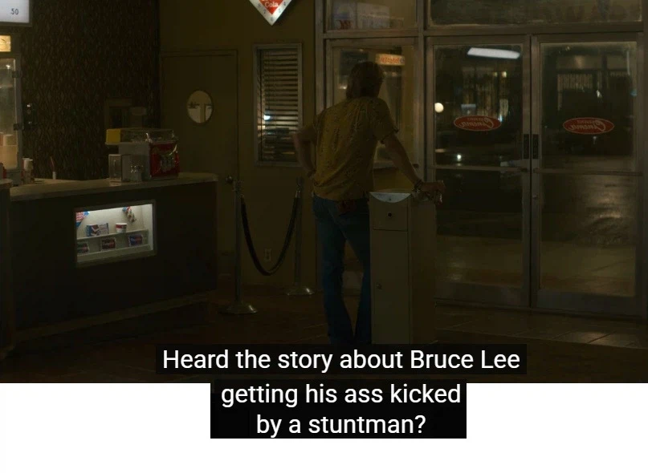
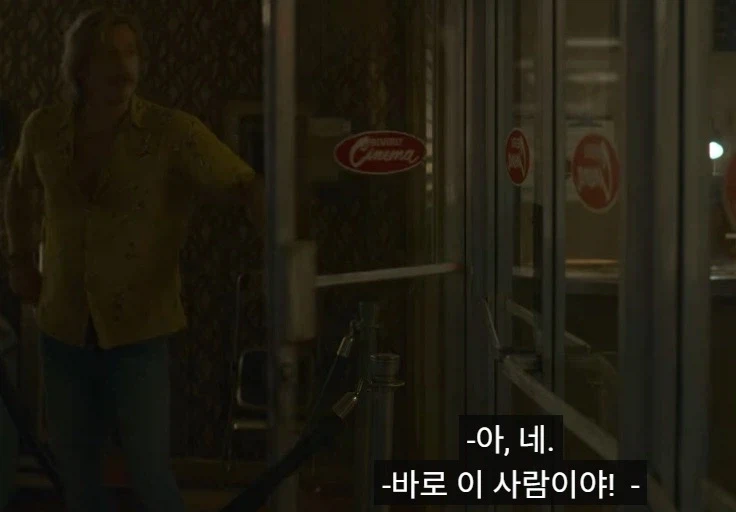
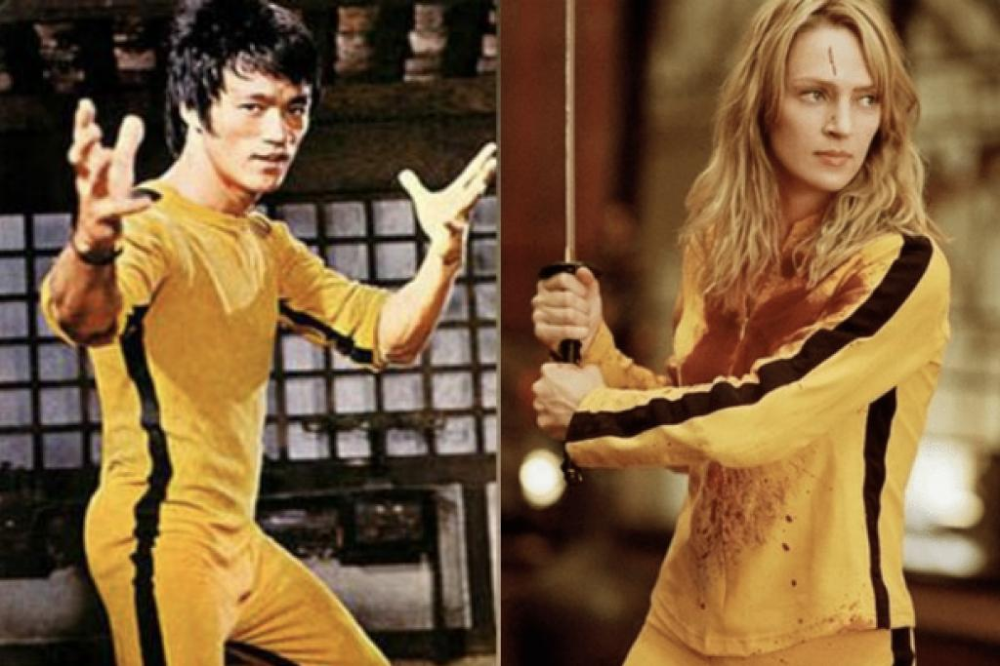

타란티노는 원스 어폰어 타임 인 할리우드 영화에서 이소룡을 굉장히 오만한 사람으로 표현했고
이에 대해 욕을 먹자



"이소룡은 실제로도 거만한 사람이었다."
"내가 지어낸 게 아니라, 그의 아내가 쓴 자서전에도 무하마드 알리를 이길 수 있다고 말했다는 뉘앙스의 내용이 있다.
그리고 이소룡은 촬영장에서 미국 스턴트맨들을 존중하지 않고 진짜로 때려서 다들 그와 일하기 싫어했다."
라고 함
타란티노가 비난을 받자 실제로 한말 인데

브루스 리의 아내 '린다 리'여사가 쓴 자서전
[Bruce Lee: The Man Only I Knew]
“Even the most scathing critics admitted that Bruce’s gungfu was sensational.
One critic wrote: ‘Those who watched him would bet on Lee to render Cassius Clay senseless
if they were put in a room and told that anything goes.”
"가장 신랄한 비평가들조차 브루스의 쿵푸 실력이 경이롭다는 것을 인정했다.
한 비평가는 이렇게 썼다. '그의 경기를 본 사람들은 만약 한 방에 갇혀서 무슨 일이든 해도 된다는 말을 듣더라도
브루스 리가 카시우스 클레이(알리 개명전 이름)를 무참히 쓰러뜨릴 거라고 장담할 것이다.'"
-88페이지 인용

이소룡이 "내가 알리를 이길 수 있다"고 허풍을 떤 게 아니라,
"당시 미국 언론과 평론가들이 이소룡의 실력을 그만큼 대단하게 평가했다"는 일화를 소개한 구절
타란티노는 주어와 맥락을 다 잘라먹고 마치 이소룡 부부가 직접 그런 오만한 말을 한 것처럼 주장한 것
당시 브루스리는 작업실에 대형 거울을 부착하고 알리의 다큐멘터리를 보며
경이로운 스텝과 펀치를 연구했으며 동료들이 알리와 싸우면 누가이기냐고 질문했을때
"내 손을 봐. 이건 자그마한 중국인의 손이야.
알리는 덩치가 엄청나서 나와 붙으면 날 죽여버릴지도 몰라
난 그가 세계에서 가장 위대한 파이터라고 생각해."
라고 말했다
아무튼, 데이빗 핀처가 감독하고 타란티노가 제작각본 맡은 원어할 주인공 클리프 부스의 외전이 발표되어
이번에 예고편이 공개되었는데



예고편 시작부터 자기 주인공이 이소룡 쳐발랐다 라는 말이 나옴

킬 빌부터가 이소룡 오마주로 가득찬 영화였는데
굳이 계속 그럴 이유가 있나
발빠는색기야! 널 믿었는데